포스터 · 카드뉴스 디자인
Adobe Photoshop · 공익 포스터 2종과 문화생활 카드뉴스 6장


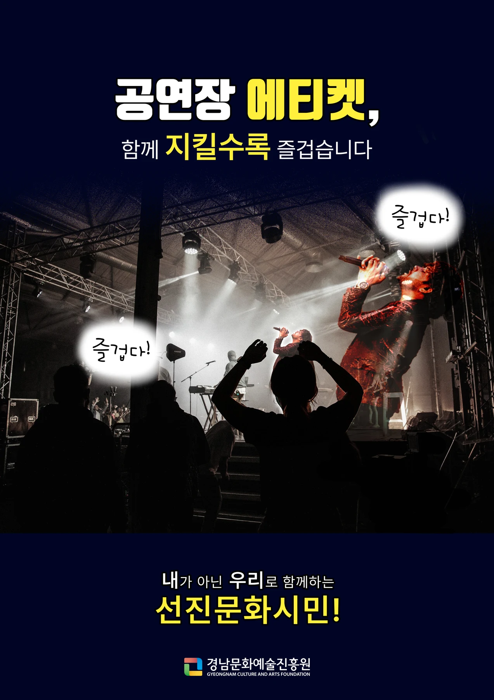
공연장 에티켓
무대 위 가수와 객석의 관객에게 똑같은 말풍선을 달았습니다. 두 사람이 함께 “즐겁다!”라고 말하는 장면에서, 관객에게 남기고 싶은 단어인 ‘에티켓’과 ‘지킬수록’에는 노란색을 썼습니다.
두 사진을 한 무대로
공연장 사진 속 관객 실루엣을 전경에 두고, 별도로 촬영된 가수를 무대 오른쪽에 배치했습니다. 가수의 얼굴과 마이크를 오른쪽에 한 번 더 크게 겹쳐, 객석에서 무대로 시선이 이어지게 했습니다.

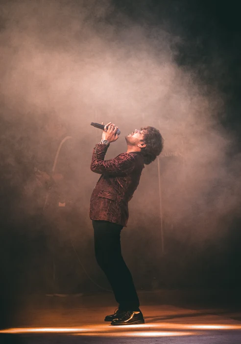

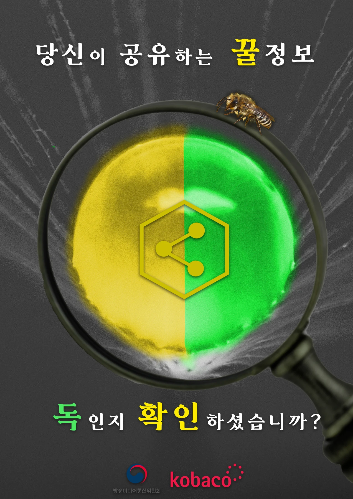
당신이 공유하는 꿀정보
인터넷에서 유용한 정보를 ‘꿀정보’라고 부르는 데서 출발했습니다. 돋보기 안에 같은 물방울의 두 얼굴을 담았습니다. 노란 절반은 ‘꿀’, 초록 절반은 ‘독’이라는 글자와 짝을 이룹니다.
공유하기 전에 한 번 더
렌즈 한가운데 공유 아이콘을 놓고 테두리에는 작은 벌을 얹었습니다. 정보를 보낼 때 누르는 익숙한 기호가 여기서는 들여다봐야 할 대상이 됩니다.

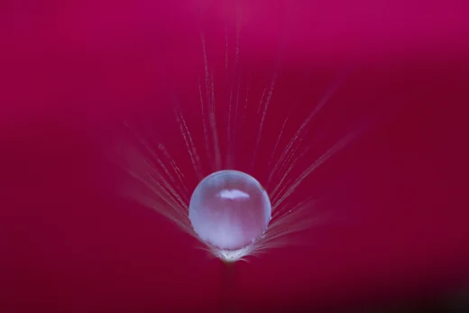
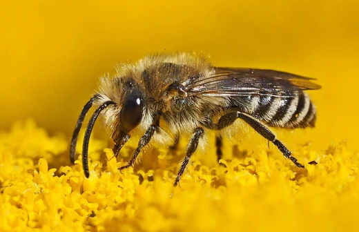

마음이 보내는 신호
“집에서도, 집에 가고 싶은 당신에게”라는 말로 시작하는 문화생활 카드뉴스입니다. 첫 장에서 소파에 앉아 있던 인물은 마지막 장에서 일어나 웃습니다. 같은 인물과 주황색 강조어를 반복하고, 네 번째 장에서는 짙은 남색으로 배경을 바꿔 ‘어떻게 쉴까?’라는 질문에서 한 번 멈추도록 했습니다.

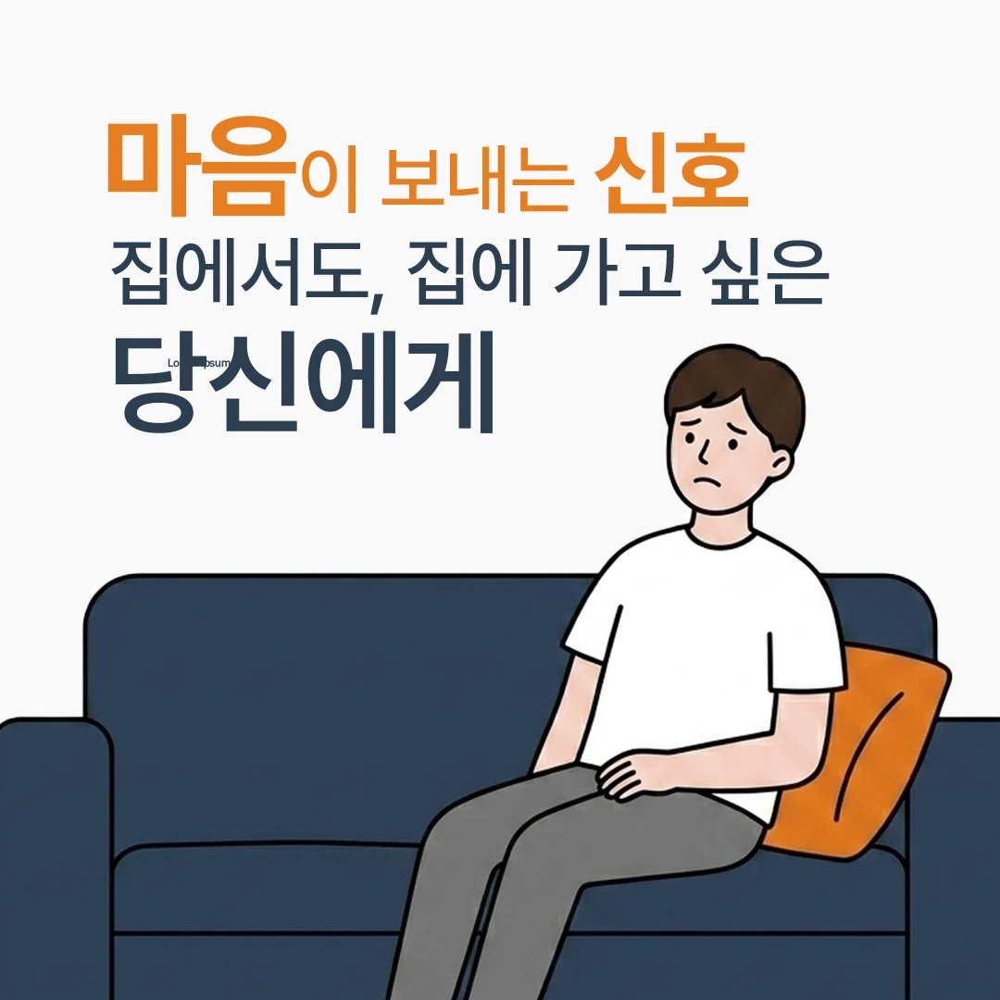

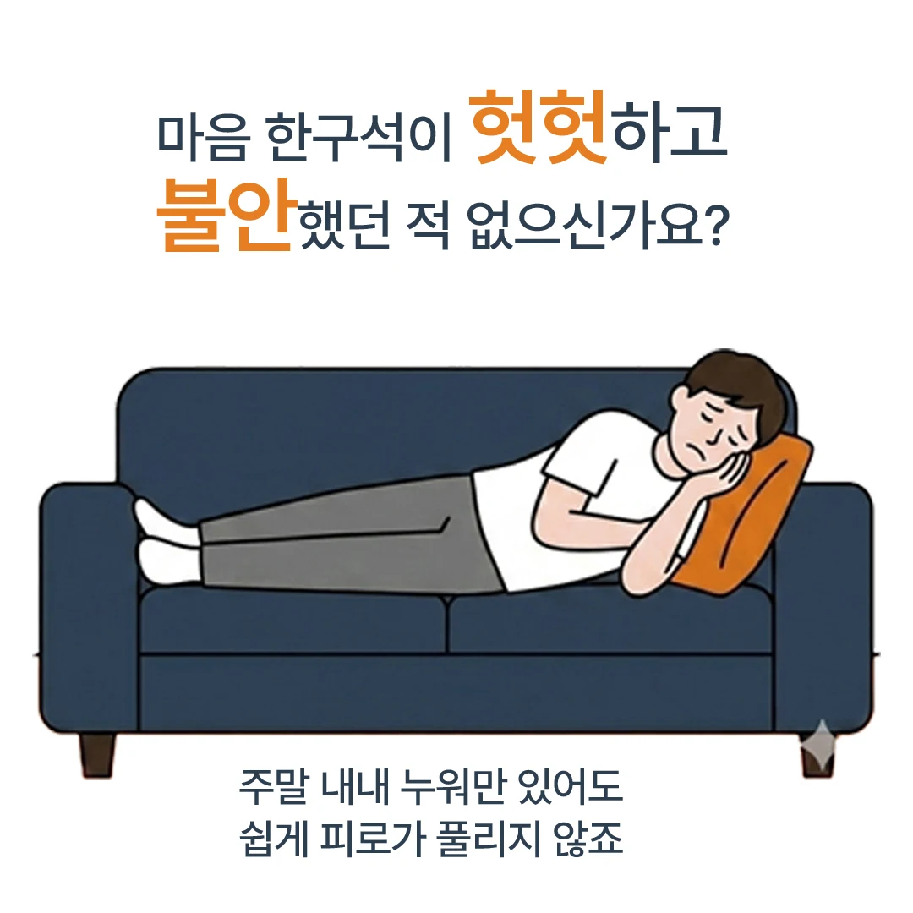

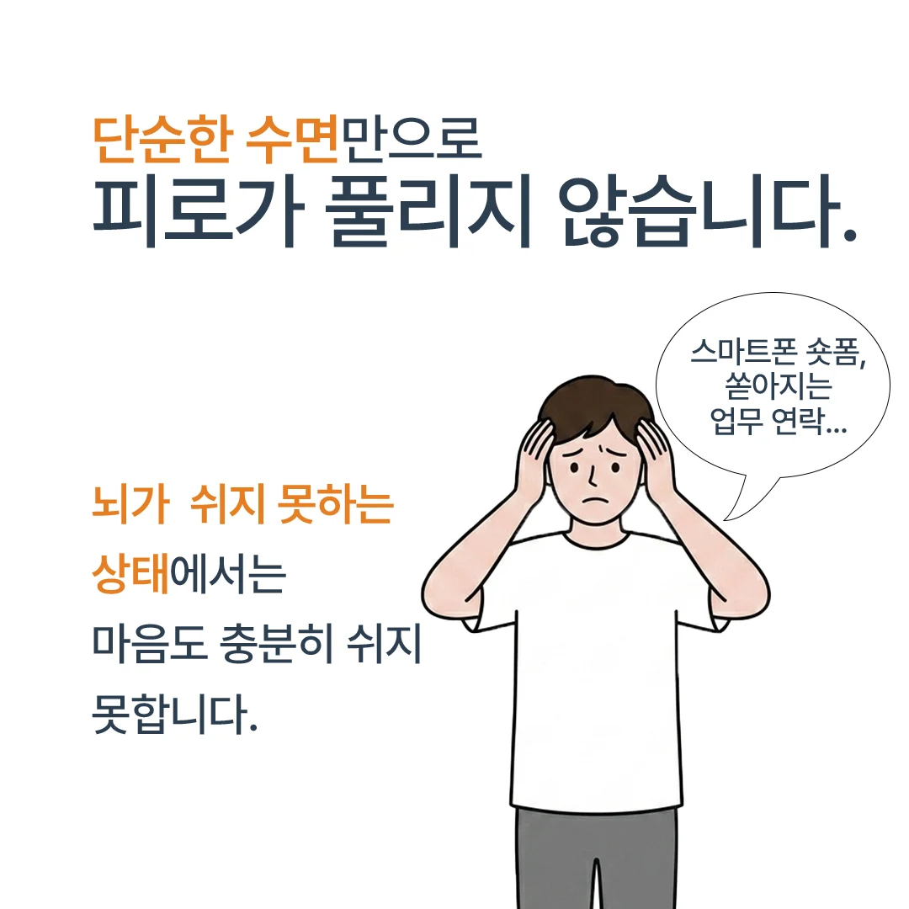

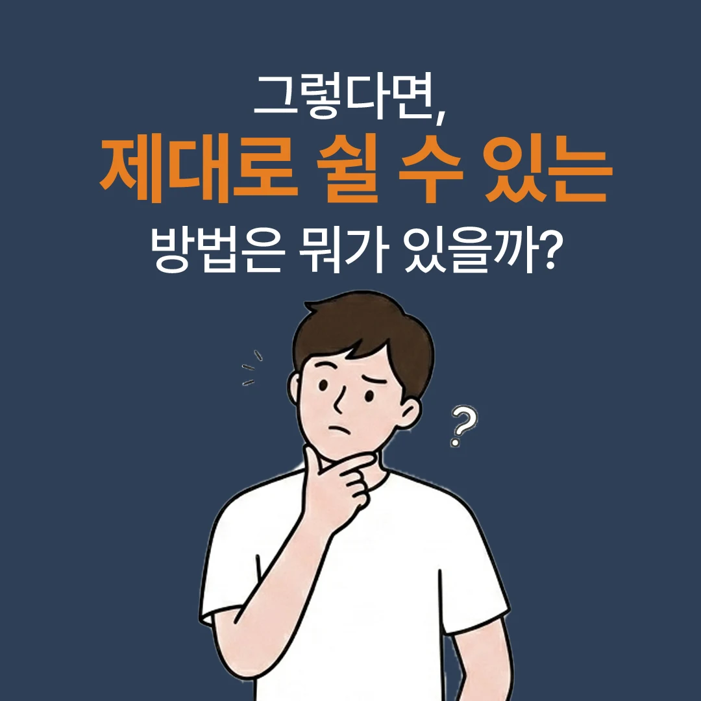

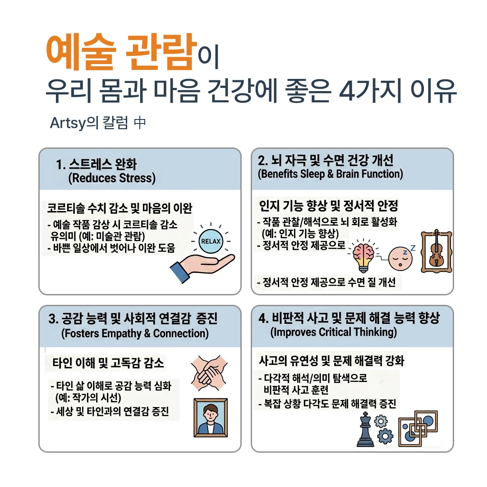

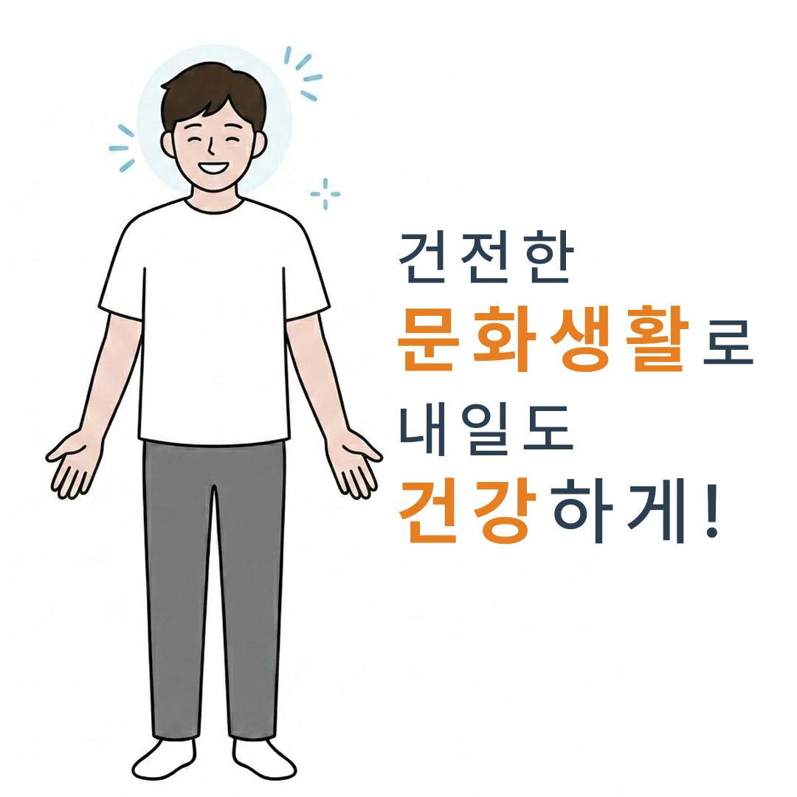